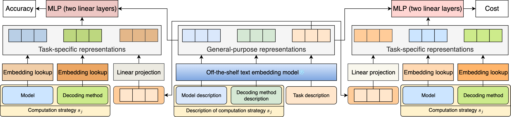

CONCUR

Performance of CONCUR
@article{chen2025concur,
title={CONCUR: A Framework for Continual Constrained and Unconstrained Routing},
author={Chen, Peter Baile and Li, Weiyue and Roth, Dan and Cafarella, Michael and Madden, Samuel and Andreas, Jacob},
journal={arXiv preprint arXiv:2512.09386},
year={2025}
}